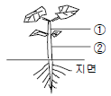
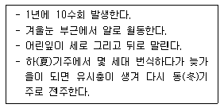

종자기사 (2006-05-14 기출문제)
1과목: 종자생산학
1. 화기(꽃)의 명칭과 수분 ㆍ 수정 후 과실 및 종자로 발달하는 관계가 잘못 표시된 것은?
- 씨방 → 과실
- 배주 → 종자
- 난핵 + 화분관핵 → 배
- 극핵 + 생식핵 → 배유
(정답률: 25%)

2. 종자발아검사에 앞서 종자를 고온 또는 질산캄륨 등으로 처리하는 주된 목적은?
- 종자소득
- 휴면타파
- 발아의 균일화
- 종자 춘화처리
(정답률: 60%)
3. 다음 중 종피는 무엇이 발달하여 되는 것인가?
- 자방벽
- 주피
- 주심
- 배낭
(정답률: 알수없음)
4. 종자생산포장의 포장검사방법에 관한 설명으로 틀린 것은?
- 포장검사는 달관검사와 표본검사 및 재관리검사로 구분하여 실시한다.
- 표본검사는 달관검사 결과 불합격 범위에 속하는 포장에 대하여 실시한다.
- 재관리검사는 표본 검사결과 규격미달 포장이라도 재관리하면 합격이 가능한 포장에 대하여 실시한다.
- 검사단위는 필지별로 하되, 동일인이 동급이상의 동일품종을 인접 경계 필지에 재배할 때에는 동일 필지 포장으로 간주할 수 있다.
(정답률: 알수없음)
5. 다음 그림은 오이 종자가 발아한 식물체이다. ①과 ②의 명칭으로 옳게 짝지어진 것은?

- ① 줄기, ② 줄기
- ① 줄기, ② 배축
- ① 상배축, ② 하배축
- ① 배축, ② 뿌리
(정답률: 87%)
6. 시금치의 채종은 보통 녹색을 띤 미숙종자를 수확하는 이유가 아닌 것은?
- 과숙하면 과피가 두껍게 경화하여 발아율이 저하된다.
- 소립종자가 대립종자에 비해 발아율이 현저히 떨어진다.
- 묵은 종자와 햇종자의 구별이 용이하다.
- 미숙종자가 완숙종자보다 발아율이 높다.
(정답률: 40%)
7. 다음 종자 중 물 속에서도 발아가 잘 되는 것은?
- 가지
- 멜론
- 상추
- 담배
(정답률: 알수없음)
8. 다음 중 장명종자에 속하는 것은?
- 토마토
- 상추
- 당근
- 시금치
(정답률: 알수없음)
9. 수확 직후 종자의 발아력을 신속하게 검정하는 방법의 하나인 지베렐린(GA)과 요소 혼합액 검정법으로 가장 큼 효과를 볼 수 있는 것은?
- 종자휴면에 효과적이다.
- 감광성종자에 효과적이다.
- 단명종자에 효과적이다.
- 장명종자에 효과적이다.
(정답률: 알수없음)
10. 다음 종자검사의 용어 설명으로 옳은 것은?
- 품종순도 : 검사항목이 전체에 대한 중량비율을 말한다.
- 이품종 : 동일품종내에서 유전적 형질이 그 품종고유의 특성을 갖지 아니한 개체를 말한다.
- 합성시료 : 소집단에서 추출한 모든 1차시료를 혼합하여 만든 시료를 말한다.
- 검사시료 : 합성시료 또는 제출시료로부터 규정에 따라 축분하여 얻어진 시료이다.
(정답률: 36%)
11. 주요 농작물의 종자 채종체계에서 보급종 채종포의 채종량은 일반재배의 몇 %로 하는가?
- 50%
- 70%
- 80%
- 100%
(정답률: 알수없음)
12. 종자를 너무 늦게 수확할 경우에 볼 수 있는 가장 큰 피해 현상은?
- 탈곡조제과정에서 상처를 받기 쉽다.
- 정선과정에서 등숙정지립이 많아 손실이 많다.
- 건조과정에서 위축되는 종자가 많다.
- 배 휴면하는 종자가 많다.
(정답률: 알수없음)
13. 종자의 수분함량과 생리적인 상태와의 관계를 바르게 설명한 것은?
- 수분함량이 13 ~ 18%인 종자는 생리적으로 미성숙된 것이다.
- 수분함량이 10 ~ 13%인 종자는 온화한 기후에서 개방된 저장상태로 5년 이상 저장할 수 있다.
- 수분함량이 8 ~ 10%인 종자는 온화한 기후에서 개방된 저장상태로 1~3년간 저장할 수 있다.
- 수분함량이 4 ~ 8%인 종자는 호흡율은 낮으나 열을 발생하기 쉽다.
(정답률: 알수없음)
14. 주로 완충기를 이용하여 종자를 선별하는 작물은?
- 티머시
- 클로버
- 시금치
- 배추
(정답률: 알수없음)
15. F1 교잡종의 이용에 관한 설명으로 틀린 것은?
- 옥수수와 같이 암수가 따로 되어 있는 경우에는 교잡 종자를 생산하기가 쉽다.
- 종자친에서 나온 화분을 이용하여야 한다.
- 제웅작업의 경비를 줄이기 위하여 웅성불임계통을 이용하거나 화학약품을 처리한다.
- 자식계통간의 교잡에서는 후대에서 양친보다 생육및 기타 특성이 월등하게 우수한 잡종강세를 이용한다.
(정답률: 알수없음)
16. 자가불화합성에 대한 설명으로 옳은 것은?
- 양파, 당은 등의 F1 채종에 이용된다.
- 계통간 또는 품종간 교배시 종자가 생기지 않는다.
- 식물의 암수생식기관이 형태나 기능상으로 정상이다.
- 자가불화합성인 모계와 불화합성인 부계를 혼식하여 F1을 채종한다.
(정답률: 알수없음)
17. 휴면에 대한 설명으로 옳지 않은 것은?
- 침엽수 종자가 활엽수 종자보다 휴면이 길다.
- 광발아성 종자에 근적색광(700~800nm)을 쪼이면 발아가 억제된다.
- 인삼종자와 소나무 종자는 미숙배로 후숙이 필수적이다.
- 미숙배, 휴면배, 각종 종피 관련 원인들에 의한 휴면을 타발휴면이라 한다.
(정답률: 64%)
18. 다음 중 정상묘로만 나열된 것은?
- 부패묘, 경 결함묘
- 경 결함묘, 완전묘
- 완전묘, 기형묘
- 기형묘, 부패묘
(정답률: 알수없음)
19. 종자 저온 감응성 식물로 짝지어진 것은?
- 배추, 상추
- 배추, 무
- 무, 당근
- 당근, 양배추
(정답률: 알수없음)
20. 다음 중 콩과 녹두에서 특정해초는?
- 새삼
- 피
- 강아지풀
- 쇠비름
(정답률: 알수없음)
2과목: 식물육종학
21. 농작물의 양적 형질로 취급하기 가장 어려운 것은?
- 사과의 무게
- 튤립의 꽃 색깔
- 고추의 개화기간
- 당근의 비타민 함량
(정답률: 알수없음)
22. 쌍자엽 식물에서 가장 널리 이용하고 있는 유전자 운반체는?
- E. coli
- 바이러스의 외투단백질
- Ti - plasmid
- 제한효소
(정답률: 알수없음)
23. 학명을 표시할 때 순서로 가장 적합한 것은?
- 종명, 속명, 명명자
- 속명, 종명, 명명자
- 과명, 종명, 명명자
- 종명, 과명, 명명자
(정답률: 알수없음)
24. 다음 중 합성품종을 육성하는 교잡식으로 옳은 것은?
- [(A×B)×B]×B
- (A×(B)×(C×D)
- A×AB×C☓D ㆍ ㆍ ㆍ ㆍ ㆍ × XN
- [(A×B)×C)]×B
(정답률: 알수없음)
25. 잡종 초기세대에서는 질적 형질이나 내병성과 같은 생리적 형질에 대한 선발을 하다가 일정세대가 지나서 양적 형질에 대한 선발을 하는 육종법은?
- 계통 육종법
- 집단(Bulk) 육종법
- 파생계통 육종법
- 여교잡 육종법
(정답률: 40%)
26. 선발한 개체의 종자를 반씩 나누어 다음 해 반량을 파종하여 특성을 검정하고, 나머지 반량은 보존하였다가 이용하는 육종법은?
- 직접법
- 간접법
- 잔수법
- 반수법
(정답률: 10%)
27. 양파의 웅성불임주의 유전자형은 Smsms 이다. 이것과 교잡해서 F1이 100% 웅성불임이 되는 웅성친의 유전자형은?
- Smsms
- Nmsms
- NMSMS
- NMSms
(정답률: 알수없음)
28. 과수에서 새 품종의 육성에 가장 크게 이바지한 돌연변이는 무엇인가?
- 방사선에 의한 돌연변이
- 아조변이
- 화학약물에 의한 돌연변이
- 생식세포 돌연변이
(정답률: 알수없음)
29. 자연상태에서 일반적으로 타가수분으로 번식하는 것은?
- 호밀
- 상추
- 토마토
- 고추
(정답률: 알수없음)
30. 유전적 침식의 설명으로 옳은 것은?
- 인위적 ㆍ 자연적 원인으로 유전자원이 소멸되는 현상
- 이용가치가 적은 유전변이가 점점 많아지는 현상
- 재배식물이 야생식물보다 생육이 빈약해지는 현상
- 야생식물의 종류가 아직도 많이 발생하는 현상
(정답률: 알수없음)
31. 플라스마 진(plasma gene)의 특성으로 옳은 것은?
- 세포질 속에 있는 유전물질로 낭세포에의 균등분 배성이 있다.
- 핵 속의 유전물질로서 낭세포에의 균등분배성이 없다.
- 세포질 속에 있는 유전물질로 낭세포에의 균등분 배성이 없다.
- 핵 속의 유전물질로서 낭세포에의 균등분배성이 있다.
(정답률: 40%)
32. 다음 중 유전 변이체를 얻을 목적으로 수행하는 것은?
- 질소 비료 시용
- 지역 적응성 검정
- 일장 처리
- 인공 교잡
(정답률: 알수없음)
33. 보통재배시 보다 채종재배시 주의할 내용으로 틀린 것은?
- 시비를 하지 말아야 한다.
- 포장은 교잡의 우려가 없는 곳에서 재배하여야 한다.
- 불량주는 도태하여야 한다.
- 병충해 방제에 힘써야 한다.
(정답률: 77%)
34. 신품종의 특성을 유지하기 위하여 취해야 할 조치가 아닌 것은?
- 원원종 재배
- 영양번식에 의한 보존재배
- 격리 재배
- 개화기 조절
(정답률: 알수없음)
35. 특정작물에서 새로 발생한 병의 내병성 인자를 찾아내는 검색 순서로 옳은 것은?
- 돌연변이 - 근연종 - 야생종 - 도입품종 - 장려품종
- 장려품종 - 도입품종 - 야생종 - 근연종 - 돌연변이
- 야생종 - 돌연변이 - 도입품종 - 장려품종 - 근연종
- 도입품종 - 근연종 - 야생종 - 돌연변이 - 장려품종
(정답률: 42%)
36. 교잡을 한 다음 잡종의 분리세대(F2)부터 개체 선발을 하여, F3이후 계통재배를 계속해가는 육종법은?
- 계통집단선발법
- 계통육종법
- 분리육종법
- 집단선발법
(정답률: 알수없음)
37. 종속간(種屬間)잡종에서 볼 수 있는 육종상 이점은?
- 후대의 유전현상이 복잡하다.
- 교잡종자를 얻기 쉽다.
- 품종간 교잡에서 얻을 수 없는 새로운 유전자형을 얻을 수 있다.
- 잡종식물의 생육과 임실(稔實)이 좋다.
(정답률: 알수없음)
38. 다음 중 작물의 생산력 검정을 위한 포장시험에서만 나타날 수 있는 오차의 요인이 아닌 것은?
- 토양의 불균일성에 따르는 오차
- 식물의 생육과 성숙에 따르는 오차
- 시험구간 경합에 의한 오차
- 품종 차이에 따르는 오차
(정답률: 50%)
39. 교잡육종법에 의해서 신품종을 육성하기 위한 교배친을 선정할 때 고려해야 할 사항으로 옳지 않는 것은?
- 포장 배치법
- 중 재배품종의 특성
- 유전자 분석의 결과
- 과거의 육종 실적 검토
(정답률: 알수없음)
40. 3배체 식물이 높은 붙임성을 나타내는 이유는?
- 치사유전자의 작용 때문에
- 게놈이 다르기 때문에
- 핵 속의 유전물질이 많아지기 때문에
- 감수분열시 염색체가 균등하게 분배되지 않기 때문에
(정답률: 알수없음)
3과목: 재배원론
41. 춘화처리에 필요한 종자의 흡수량(吸水量)이 가장 적은 것은?
- 보리
- 호밀
- 가을 밀
- 귀리
(정답률: 알수없음)
42. 다음 비료 중 질소함량이 가장 많은 것은?
- 황산암모니아
- 질산암모니아
- 요소
- 석회질소
(정답률: 알수없음)
43. 일반적인 잡초종자의 발아 특성으로 옳은 것은?
- 잡초종자는 혐광성이다.
- 변온상태에서 발아가 잘 된다.
- 깊은 복토에서 발아가 잘 된다.
- 밭잡초의 경우 습한 토양에서 발아가 조장된다.
(정답률: 알수없음)
44. 작물(벼)의 관수 피해 설명으로 옳은 것은?
- 출수개화기에 가장 약하다.
- 침수보다 관수에서 피해가 적다.
- 수온과 기온이 높으면 피해가 적다.
- 청수보다 탁수에서 피해가 적다.
(정답률: 알수없음)
45. 질소를 10a당 9.2kg 시용하고자 할 때, 기비 40%의 요소 필요량은?
- 4kg
- 8kg
- 12kg
- 16kg
(정답률: 알수없음)
46. 다음 중 내염성 작물로 분류되는 것은?
- 감자
- 완두
- 목화
- 고구마
(정답률: 알수없음)
47. 두 가지 식물의 영양체인 대목과 접수를 접목할 경우 접목 부위가 옳은 것은?
- 대목의 목질부 + 접수의 목질부
- 대목의 목질부 + 접수의 형성층
- 대목의 형성층 + 접수의 목질부
- 대목의 형성층 + 접수의 형성층
(정답률: 알수없음)
48. 벼 재배시 도복발생 위험이 가장 큰 것은?
- 검은줄오갈병 발생
- 백엽고병 발생
- 잎집무늬마름병(문고병) 발생
- 호엽고병 발생
(정답률: 알수없음)
49. 질소농도가 0.3%인 수용액 20L를 만들어서 엽면시비를 하려고 할 때, 필요한 요소비료의 양은? (단, 요소비료의 질소함량은 46%이다.)
- 약28g
- 약60g
- 약77g
- 약130g
(정답률: 34%)
50. 가뭄해(旱害)에 대한 밭의 재배 대책이 될 수 있는 것은?
- 뿌림골을 높게 한다.
- 재식밀도를 높게 한다.
- 질소질 비료를 시용한다.
- 봄철의 보리밭이 건조할 때는 답압을 한다.
(정답률: 40%)
51. Ca++, K+, Mg++, Na+ , H+이 각각 2me/100mg, 양이온 총량 10me/100g일 경우에 이 토양의 염기포화도는?
- 20%
- 40%
- 60%
- 80%
(정답률: 0%)
52. 다음 중 비엽면적(比葉面積, Specific leaf area)에 대한 설명으로 옳은 것은?
- 잎의 건물중 1g당의 엽면적
- 단위면적의 토지상에 있는 엽면적
- 식물체 건물중에 대한 엽면적의 비율
- 엽면적 지수를 시간으로 적분한 값
(정답률: 알수없음)
53. 농업에서 토지생산성을 무난히 증대시키지 못하는 주요 요인은?
- 기술개발의 결여
- 노동 투하량의 한계
- 생산재 투하량의 부족
- 수확체감의 법칙 작용
(정답률: 알수없음)
54. 작물이 생육 최적 온도 이상에서 오래 유지될 때 나타나는 현상이 아닌 것은?
- 체내에 암모니아 축적이 많아진다.
- 원형질막이 점괴화 되어 기능이 상실된다.
- 엽록체의 전분이 점괴화 되어 기능이 상실된다.
- 호흡량이 증대하여 당의 함량이 줄어든다.
(정답률: 알수없음)
55. 작물의 원산지를 추정하는데 유전자 중심설의 이론적 근거는?
- 그 식물종의 변이가 적다.
- 원시적 우성형질이 많다.
- 원시적 열성형질이 많다.
- 그 지역의 환경 적응성이 크다.
(정답률: 알수없음)
56. 토마토 식물체에 수분이 부족하면 기공을 닫아 우조저항성을 크게 하는 식물호르몬은?
- Abscisic acid
- Cytokinin
- Ethylene
- Phosfon - D
(정답률: 알수없음)
57. 작물의 생육 ㆍ 화성 ㆍ 결실과의 관계를 잘 설명할 수있는 것은?
- C-N율
- S-R율
- T-R율
- R/S율
(정답률: 알수없음)
58. 작물의 분화 및 발달 과정으로 옳은 것은?
- 유전적 변이 발생 - 적응 - 순화 - 격리
- 도태 - 유전적 변이 발생 - 적응 - 순화
- 적응 - 유전적 변이 발생 - 순화 - 격리
- 유전적 변이 발생 - 순화 - 도태 - 적응
(정답률: 알수없음)
59. 벼가 가장 많이 흡수하는 무기성분으로 충분히 흡수한 벼는 잎이 직립하기 때문에 수광상태가 좋게 되어 벼군락의 동화량이 증대시키는 효과가 있는것은?
- 규산
- 질소
- 인산
- 칼리
(정답률: 알수없음)
60. 다음 중 포장용수량의 MPa 값으로 가장 적합한 것은?
- MPa = 0
- MPa = 0.013
- MPa = 0.033
- MPa = 0.043
(정답률: 알수없음)
4과목: 식물보호학
61. 병원체가 기주체에 침입한 다음 양자 상호작용의 결과로 생성된 병원체의 발육을 저해하는 물질은?
- 프로토카테쿠산
- 파이토알렉신
- 카테콜
- 리그닌
(정답률: 알수없음)
62. 성충의 산란 가해로 과수류, 수목류의 주로 2년생 가지가 말라 죽는다. 어느 해충의 피해인가?
- 갓노랑비단벌레
- 말매미
- 박쥐나방
- 배나무줄기벌
(정답률: 50%)
63. 밀 ㆍ 줄기녹병균의 포자형 중에서 주로 밀을 침해하여 피해를 주는 것은?
- 소생자
- 동포자
- 병포자
- 하포자
(정답률: 알수없음)
64. 다음 중 저온성병에 해당하는 것은?
- 모썩음병
- 토마토풋마름병
- 벼잎집얼룩병
- 벼흰잎마름병
(정답률: 20%)
65. 잡초와 작물과의 경합에서 잡초경합한계기간을 가장 적합한 것은?
- 작물 전 생육기간의 첫 1/3 ~ 1/2
- 작물 전 생육기간의 첫 1/2 ~ 말기
- 작물 전 생육기간의 첫 1/3 ~ 말기
- 작물의 전 생육기간
(정답률: 80%)
66. 식물의 자낭균문에 속하는 병은?(오류 신고가 접수된 문제입니다. 반드시 정답과 해설을 확인하시기 바랍니다.)
- 소나무혹병균
- 자주빛날개무늬병균
- 사과나무갈색무늬병균
- 복숭아나무잎오갈병균
(정답률: 알수없음)
67. 다음 중 분화가 다양하고 종 수가 가장 많은 곤충목은?
- 딱정벌레목
- 나비목
- 벌목
- 파리목
(정답률: 알수없음)
68. 다음 중 주로 논에 발생하는 광엽 1년생 잡초는?
- 바랭이
- 여뀌바늘
- 황새냉이
- 개망초
(정답률: 알수없음)
69. 다음 작물들의 병 이름과 그 병균의 학명이 틀린 것은?
- 상추 균핵병 - Sclerotinia sclerotiorum
- 고추 역병 - Phytophthora capsici
- 토마토 시들음병 - Xanthomonas compestris
- 사과나무줄기 썩음병 - Botryosphaeria ribis
(정답률: 알수없음)
70. 곤충의 행동에 대한 설명으로 틀린 것은?
- 곤충에는 주기성이 있으며 대부분의 주기적 행동은 24시간 주기이다.
- 고정행위양식(fixed action pattern)은 가장 단순한 후천적 행동으로 행위의 발생에 외적 준비가 필요하다.
- 주성은 자극의 방향에 대한 일정한 이동방향을 나타내는 행동으로 양성과 음성으로 구분된다.
- 자극의 방향과 곤충의 장축간에 방향성을 유지하는 행동을 횡축정위(transverse orientation)라고 한다.
(정답률: 알수없음)
71. 다음은 어떤 해충의 생활사인가?

- 사과하늘소
- 가루깍지벌레
- 복숭아혹진딧물
- 배추순나방
(정답률: 42%)
72. 다음 중 비선택성 제초제는?
- 씨마네수화제(씨마진)
- 옥사디아존유제(호미단)
- 파라코액제(그라목손)
- 이사디액제(이사디아민염)
(정답률: 알수없음)
73. 해충 방제법 중 생물적 방제의 장점에 해당하는 것은?
- 생태계의 평형을 유지시킬 수 있다.
- 비용이 많이 든다.
- 방제효과가 빠르다.
- 방제효과가 일시적이다.
(정답률: 알수없음)
74. 잡초의 일반적인 유용성(有用性)에 해당하는 것은?
- 주요 유전자원
- 병해충 매개
- 작업환경의 악화
- 작물과의 경쟁
(정답률: 60%)
75. 주제(主劑)의 성질이 지용성으로 물에 녹지 않을 때 유기용매에 녹여 유화제를 첨가한 용액으로 살포시 유탁액으로 만든 다음 분무하게 되는 농약은?
- 액제
- 유제
- 수화제
- 액상수화제
(정답률: 알수없음)
76. 생태계에서 그 지위가 분해자의 역할을 하는 시식성(屍食性) 해충은?
- 송장벌레
- 명주잠자리유충
- 땅강아지
- 개미사돈
(정답률: 알수없음)
77. 천적 곤충을 보호하는 측면에서 사용되어야 할 바람직한 살충제의 종류는?
- 소화중독제
- 접촉제
- 침투성 살충제
- 훈증제
(정답률: 알수없음)
78. 냉해의 생리적 원인에 해당하지 않는 것은?
- 증산과잉
- 호흡저하
- 단백질 분해 촉진
- 광합성 작용의 과잉
(정답률: 알수없음)
79. 유기인계 유제 50%를 1,000배로 희석해서 10a당 10말을 살포하여 해충을 방제하려고 할 때 소요되는 역량은? (단, 1말은 20L이다.)
- 20mL
- 200mL
- 150mL
- 100mL
(정답률: 알수없음)
80. 잡초의 발생 시기에 따른 분류에서 여름형 잡초는?
- 냉이
- 벼룩나물
- 속속이풀
- 개여뀌
(정답률: 34%)
5과목: 종자관련법규
81. 배추 2품종, 사과 1품종에 대해 품종보호 출원을 하였다. 이때 총 품종보호출원수수료는 얼마인가?
- 3만원
- 6만원
- 9만원
- 10만원
(정답률: 50%)
82. 종자관리사가 보증서의 내용 중 수량을 허위로 발급하였을 경우의 벌칙 기준은?
- 500만원 이하의 과태료
- 1년 이하의 징역 또는 1천만원 이하의 벌금
- 2년 이하의 징역 또는 2천만원 이하의 벌금
- 3년 이하의 징역 또는 3천만원 이하의 벌금
(정답률: 알수없음)
83. 채소작물 종자업의 등록 시설기준으로 틀린 것은?
- 철재 하우스 330m2 이상
- 육종포장 30a 이상
- 정선기, 건조기, 포장기, 수분측정기 및 발아시험기 각 1대 이상
- 실험실 100m2 이상
(정답률: 알수없음)
84. 옥수수 종자의 수분함량이 20% 이상일 때 깊이 25mm 이내인 그릇 안에서 예비건조 방법으로 적합한 것은?
- 70°C로 최초 수분함량에 따라 2~5시간 건조시킨다.
- 55°C로 최초 수분함량에 따라 5~7시간 건조시킨다.
- 50°C로 최초 수분함량에 따라 7~10시간 건조시킨다.
- 45°C로 최초 수분함량에 따라 14시간 건조시킨다.
(정답률: 알수없음)
85. 수출 ㆍ 수입 또는 수입된 종자의 국내유통을 제한할수 있는 경우가 아닌 것은?
- 수입된 벼 종자가 줄기가 짧은 유전적 특성을 보일경우
- 수입된 종자에 유해 줄기가 짧은 유전적 특성을 보일 경우
- 유전자 변형 등으로 농작물 생태계를 심각하게 파괴시킬 우려가 있는 경우
- 수입된 종자의 재배로 특정 병해충이 확산될 우려가 있는 경우
(정답률: 70%)
86. 감자 보급종 종자검사기준으로 옳은 것은?
- 괴경 중량은 50 ~ 240g 이어야 한다.
- 수분해 등 피해서는 18.0% 이하이어야 한다.
- 기형서는 2.0% 이하이어야 한다.
- 기타 병은 4.0% 이하이어야 한다.
(정답률: 47%)
87. 출원품종의 구별성 심사를 위하여 출원품종과 특성검정시 비교하는 품종은?
- 표준품종
- 우량품종
- 출원품종과 가장 유사한 대조품종
- 수량이 우수한 품종
(정답률: 알수없음)
88. 다음 중 이물에 포함되는 것은?
- 균핵병해립
- 미숙립
- 주름진립
- 발아립
(정답률: 72%)
89. 다음 중 품종보호요건으로 바르게 짝지어진 것은?
- 구별성, 균일성, 안전성, 우수성
- 관련 규정에 의한 품종명칭, 구별성, 균일성, 안정성, 신규성
- 구별성, 균일성, 안정성, 신규성, 영속성
- 관련 규정에 의한 품종명칭, 구별성, 균일성, 안정성, 광지역성
(정답률: 알수없음)
90. 다음 중 원품종의 품종보호권의 효력이 미치지 아니하는 경우는?
- 보호품종(기본적으로 유래된 품종이 아닌 보호품종에 한한다)으로부터 기본적으로 유래된 품종
- 타인의 보호품종과 2개의 특성에서 구별되는 품종
- 보호품종을 반복하여 사용하여야 종자생산이 가능한 품종
- 타인의 보호품종과 명확히 구별되지 않는 품종
(정답률: 알수없음)
91. 다음 중 국가 품종목록에 등재하고자 할 경우 제출서류로서 틀린 것은?
- 종자생산계획서 1부
- 품종목록등재신청서부본 1부
- 품종의 사진 및 종자시료
- 품종목록등재신청수수료 납부증명서 1부
(정답률: 62%)
92. 종자산업법상 종자보증의 구분에 대한 설명으로 옳은 것은?
- 종자보증은 농립부장관이 행하는 국가보증과 종자관리사가 행하는 자체보증으로 구분한다.
- 종자보증은 농립부장관이 행하는 자체보증과 종자관리사가 행하는 종자검사로 구분한다.
- 종자보증은 농림부장관이 행하는 포장검사와 종자관리사가 행하는 종자검사로 구분한다.
- 종자보증은 농림부장관이 행하는 종자검사와 종자관리사가 행하는 포장검사로 구분한다.
(정답률: 알수없음)
93. 국가품종목록에 등재한 경우 농림부장관이 공고하여야 할 사항이 아닌 것은?
- 작물의 종류
- 품종의 명칭
- 판매할 지역
- 유효 기간
(정답률: 80%)
94. 벼, 옥수수, 감자 등 품종목록등재대상작물의 수입신고와 관련된 다음 사항 중 틀린 것은?
- 국제 검정기관이 발행하는 종자보증서를 제출해야한다.
- 종자를 수입하여 채종한 후 종자의 용도로 전량 수출하는 경우에는 수입신고를 수출신고에 갈음할수 있다.
- 종자관리요강 제12조에 의한 포장 및 종자검사기준에 미달되는 종자는 수입할 수 없다.
- 국가기관, 농업계 대학에서 시험 ㆍ 연구목적으로 일정량의 종자를 수입하는 경우에는 신고가 면제된다.
(정답률: 알수없음)
95. 벼 일반재배의 경우 포장크기가 20.a 일 때 표본 조사구는 몇 구로 하여야 하는가?
- 3개 조사구 이상
- 4개 조사구 이상
- 5개 조사구 이상
- 7개 조사구 이상
(정답률: 알수없음)
96. 다음 중 허위표시에 해당되지 않는 것은?
- 품종보호권이 없는 품종을 품종보호된 품종이라고 광고하였다.
- 품종보호출원된 품종을 품종보호된 품종이라고 표시 하였다.
- 품종보호출원중인 품종을 품종보호출원중이라고 전단을 만들어 배포하였다.
- 품종보호출원할 계획을 가지고 품종보호 출원하였다고 선전하였다.
(정답률: 알수없음)
97. 종자산업법에서 ‘작물’을 가장 잘 설명한 것은?
- 농산물생산을 위하여 재배되는 모든 식물
- 농산물과 임산물의 생산을 위하여 재배되는 모든 식물
- 농산물 ㆍ 임산물 또는 수산물의 생산을 위하여 재배되는 모든 식물
- 증식용으로 재배되는 모든 식물
(정답률: 알수없음)
98. 종자산업법에 의해 당해 품종의 진위성 및 품질이 보증된 채종 단계별 종자를 무엇이라 하는가?
- 보증종자
- 원원종
- 진위종자
- 보급종
(정답률: 알수없음)
99. 다음 중 국가품종목록등재 대상 작물은?
- 콩
- 밀
- 팥
- 귀리
(정답률: 알수없음)
100. 종자산업법 관련 규정에 위반하여 품종보호권, 전용실시권 또는 질권의 상속 기타 일반승계의 취지를 신고하지 아니한 자에게 해당되는 벌칙은?
- 1년 이하의 징역
- 2년 이하의 징역
- 500만원 이하의 과태료
- 50만원 이하의 과태료
(정답률: 알수없음)
난핵과 화분관핵은 꽃에서 만나서 결합하여 배를 형성합니다. 극핵과 생식핵은 식물의 생식과 관련된 핵으로, 배유를 형성합니다.